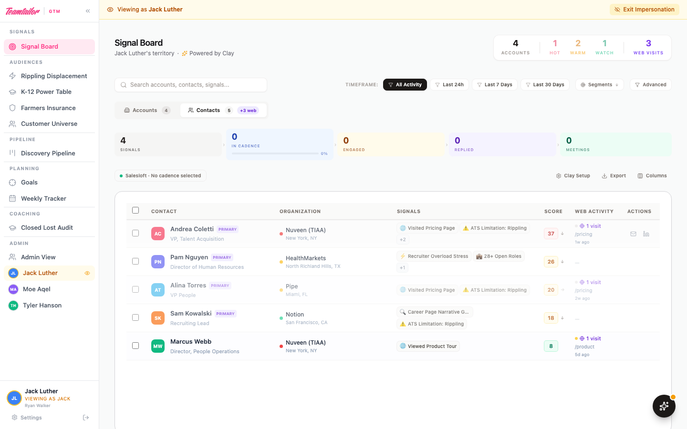
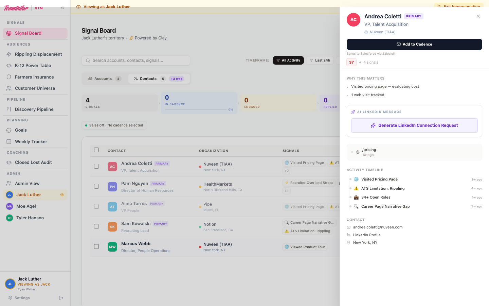
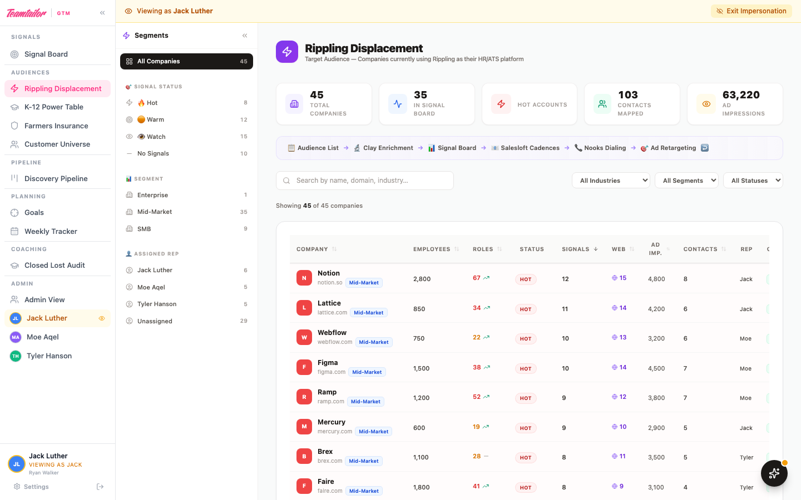
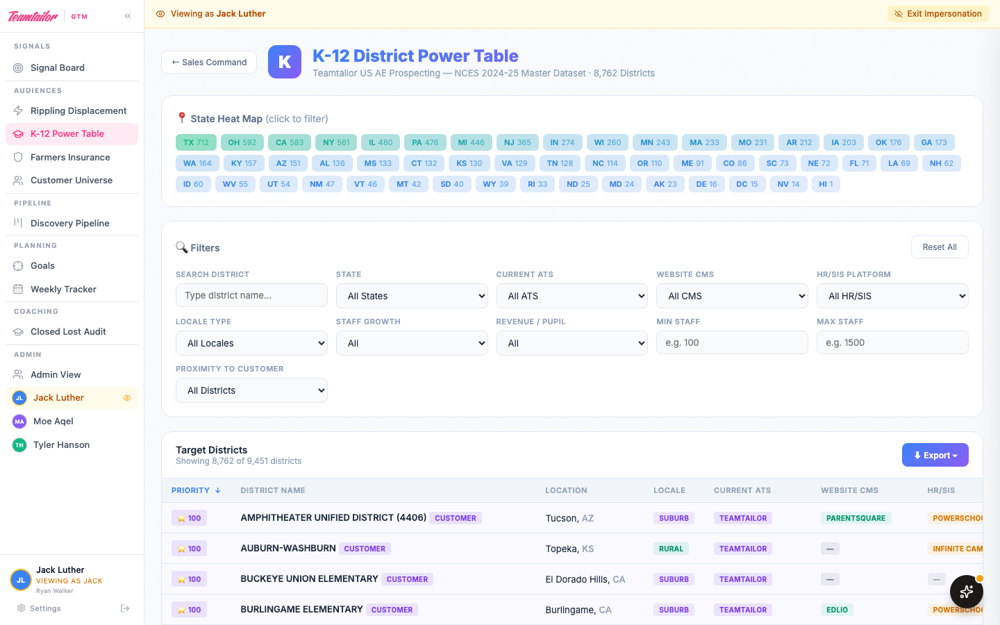
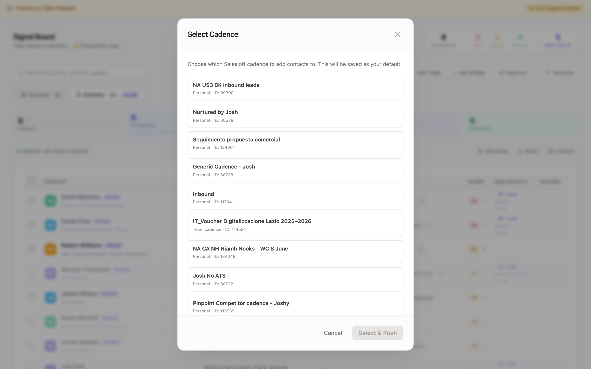
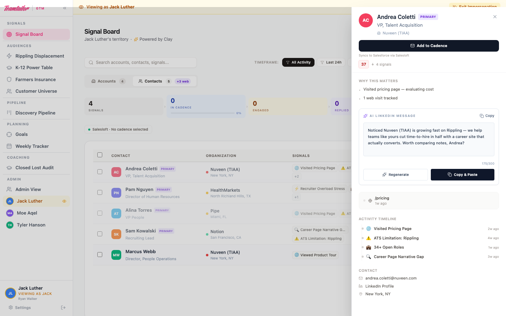
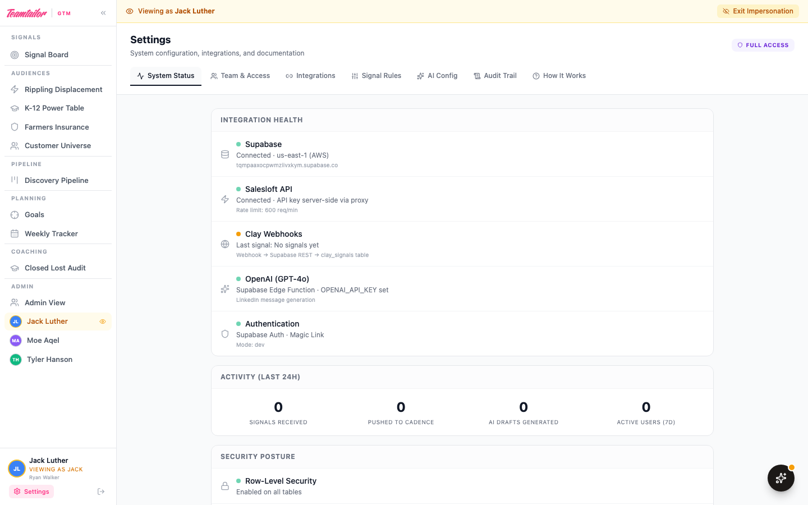

Teamtailor US — Built by Ryan Walker
The nerve center. Every account is scored, ranked, and assigned to a rep — automatically.
Every account ranked by composite intent score. Hot signals surface first.
Accounts ranked by composite intent score. ICP tiers, signal tags, and Salesloft status — all in one view.

A 64-signal framework across 28 categories defines what the system looks for. Each signal has a weight (1–10) indicating buying intent strength.
64
Total Signals
28
Categories
4
Weight Tiers
These signals map directly to Clay's detection columns. Clay identifies them automatically across the web — the Teamtailor GTM Workspace ranks and presents the results.
When Clay enriches an account, the system produces a full sales playbook. Reps see everything they need before picking up the phone.
Click any account to open the full detail drawer — ISP score, account intelligence, pain points, recommended approach, and employer reviews.

Signals → In Cadence → Engaged → Replied → Meetings
Heatmap showing multi-contact penetration per account
Working accounts with no activity for 60+ days auto-nurture
Build and save custom filters with field/operator/value conditions
Signals heating up or cooling off per account
Hover to see breakdown by source with plain-language insights
Red badges on accounts with no signal activity > 3 days
Admin sees actioned/total % per rep across territories
Audience lists feed Clay. Clay detects signals. Signals drive action. Action generates more signals.
Every audience table feeds into the same pipeline. The Signal Board shows signals from all audiences — tagged by source.
45 companies currently using Rippling as their HR/ATS — a displacement play. Each company is scored, enriched via Clay, and piped into the Signal Board when intent signals fire.

9,451 US school districts enriched with NCES data, current ATS detection, and staff growth trends. The largest audience table — built for the education vertical.

From raw signal detection to booked meeting — end to end.
How data moves through the system — from webhook to phone call.
Clay fires a webhook every time an enrichment table row completes. Here is exactly what flows into the system.
| Field | Source | Example |
|---|---|---|
| company_name | Clay enrichment | Nuveen Investments |
| audience_source | Clay enrichment | Rippling / K-12 / etc. |
| full_name / email | Clay waterfall | Sarah Chen / s.chen@nuveen.com |
| current_ats | Clay enrichment | Greenhouse |
| signal_name / signal_score | Clay trigger | Pricing Page Visit / 10 |
| icp_tier | Clay formula | hot / warm / watch |
| ai_research_brief | Clay AI column | "Actively evaluating ATS alternatives..." |
| assigned_rep_id | Clay round-robin | rep-jl (Jack Luther) |
| isp_score | Clay ISP model | 67 (0–100 scale) |
| account_intel | Clay AI column | ["5,000 employees", "Taleo user", ...] |
| pain_points | Clay AI column | ["How is the current ATS handling volume..."] |
| recommended_approach | Clay AI column | ["Position as modern replacement for Taleo..."] |
Webhook URL: https://[project].supabase.co/rest/v1/clay_signals
Key point: Clay does the intelligence, the app does the visualization
ICP tier, signal name, signal score, and research briefs are all computed by Clay before reaching the app. The Signal Board groups, ranks, and presents that data. If Clay's scoring logic changes, the board reflects it automatically.
When a rep clicks "Push to Cadence," the system enrolls the contact and tracks all downstream activity.
SFDC sync: Our App → Salesloft → Salesforce via Salesloft's native CRM sync. One-directional.
One click opens the cadence picker — real Salesloft cadences pulled via API. Select a cadence, confirm, and the contact is enrolled instantly.

Full transparency: every API endpoint, its method, and what data moves. No hidden access.
| Endpoint | Method | Direction | Purpose |
|---|---|---|---|
/v2/people.json?email= |
GET | 📥 READ | Look up a person by email — check if contact exists before creating |
/v2/people.json |
POST | 📤 WRITE | Create new person (name, email, title, phone, company) if not found |
/v2/people/{id}.json |
PATCH | 📤 WRITE | Update contact stage to "Working" after cadence enrollment |
/v2/cadences.json |
GET | 📥 READ | List available cadences for the cadence picker dropdown |
/v2/cadence_memberships.json |
POST | 📤 WRITE | Enroll a person into a selected cadence (the core "Push to Cadence" action) |
/v2/activities/emails.json |
GET | 📥 READ | Pull email activity — sent count, opens, replies, bounces |
/v2/activities/calls.json |
GET | 📥 READ | Pull call activity — dials, duration, disposition, sentiment |
/v2/meetings.json |
GET | 📥 READ | Pull booked meetings per person (used for funnel metrics) |
🔒 Security Model
API key stored server-side only. Browser calls /salesloft-api/* → server proxy injects Authorization: Bearer header. Key never reaches the client.
📊 Summary: 5 READ / 3 WRITE
Writes are limited to: create person, update stage, enroll in cadence. We never delete, modify cadence content, or access admin settings.
Signal → Research → Draft → Cadence → Nooks → Meeting.
Every morning. Under 60 seconds per account.
OLD WAY
Manual research → write email → build Nooks list → hope for the best → 15+ min per prospect
WITH GTM WORKSPACE
Open Signal Board → Read AI brief → Push to cadence → Power dial → under 60 seconds
One click generates a personalized LinkedIn connection request using GPT-4o. References the prospect's ATS, signals, and company — under 300 characters, ready to paste.

A full Settings dashboard for monitoring, troubleshooting, and team management.
Seven tabs covering everything from system health to role-based documentation. Exec users see all tabs in read-only mode.

Real-time health of every integration (Supabase, Salesloft, Clay, OpenAI). Activity metrics for last 24 hours.
Score thresholds, ISP scoring model, the full 64-signal taxonomy with weights, freshness indicators, and automation rules.
Role-specific documentation for each team member. Each role sees documentation tailored to their function — admins see technical details, execs see plain-English overviews.
Eight authorized users across three roles. Every login uses a @teamtailor.com email via magic link (passwordless). No shared accounts.
| User | Role | Context | Visibility |
|---|---|---|---|
| Ryan Walker | Admin | Platform Administrator | All territories · All features · Impersonate any rep |
| Brian McGarry | Exec | GM, North America | Signal Board (all territories, read-only) · Settings |
| Daniel Mathisen | Exec | Corporate Development, Clay Owner | Signal Board (all territories, read-only) · Settings |
| Gordon French | Exec | RevOps, North America | Signal Board (all territories, read-only) · Settings |
| Jesper Åström | Exec | Growth Marketing, Website & Ads | Signal Board (all territories, read-only) · Settings |
| Jack Luther | Rep | Sales Development | Own territory only · Push to cadence · Notes · Discovery |
| Moe Aqel | Rep | Sales Development | Own territory only · Push to cadence · Notes · Discovery |
| Tyler Hanson | Rep | Sales Development | Own territory only · Push to cadence · Notes · Discovery |
Every user is hardcoded to a whitelist — there is no self-registration. Adding a new user requires a code deploy.
Every row of data is assigned to a specific rep. The system enforces who can see what at the code level — not just UI-level hiding.
Every signal row in the database has an assigned_rep_id field (e.g., rep-jl for Jack). When a rep logs in, the board filters to only show rows matching their ID. This happens in code before rendering — the data never reaches the browser for accounts that don't belong to them. Contact-level activity rolls up to the account level automatically, so the account drawer shows all signals from all contacts at that company.
Policy-by-policy alignment with every Teamtailor internal security document.
Every internal policy requirement mapped to how it is addressed. No jargon — just what the rules say and what is built.
| What Teamtailor asks | Why it matters | What we did | Status |
|---|---|---|---|
| "Get new vendors approved" | Prevents unauthorized tools | Vendor forms ready for Cakewalk App Catalog | 📝 Ready |
| "Log who did what and when" | Audit trail | Immutable audit_logs table |
✅ Done |
| "Only let people see data they need" | Least-privilege | Row-Level Security on every table | ✅ Done |
| "Use unique logins, no shared passwords" | Traceability | Magic link auth, unique @teamtailor.com | ✅ Done |
| "Store secrets securely" | Prevents exposure | API keys server-side + Supabase Vault | ✅ Done |
| "Don't keep data longer than needed" | Minimizes risk | 90-day auto-purge on signal data | ✅ Done |
| "Disclose AI tool usage" | Transparency | Disclosure drafted for CISO | 📝 Ready |
| "Register new systems" | Company awareness | System register entry drafted | 📝 Ready |
| "Have a continuity plan" | Business continuity | RPO 24h / RTO 1h, fallbacks defined | ✅ Done |
| "Assess and document risks" | Risk management | 10 risks scored, all ≤ 2.0 severity | ✅ Done |
| Service | Owner | Auth | Location |
|---|---|---|---|
| Supabase | ryan.walker@teamtailor.com | Corp email | AWS us-east (SOC 2) |
| Railway | ryan.walker@teamtailor.com | Corp email | SOC 2 |
| Clay | Teamtailor license (Daniel) | Corp SSO | SOC 2 |
| Salesloft | Teamtailor org | Corp SSO | Existing infra |
| OpenAI | API key in Supabase Vault | Server-side | Never reaches browser |
✅ Every service uses Teamtailor's existing org or a dedicated @teamtailor.com account. Zero personal accounts.
Everything needed to get fully operational.
React + TypeScript
Vite build system
Tailwind CSS
Framer Motion animations
Lucide icons
Supabase (PostgreSQL)
Row-Level Security
Edge Functions (Deno)
Magic Link Auth
REST API
Clay — Enrichment + Webhooks
Salesloft — Cadence API
Nooks — Power Dialing (via Salesloft)
OpenAI — GPT-4o via Edge Function
Railway (SOC 2 Type II)
Auto-deploy from GitHub
Custom domain ready
Teamtailor uses Cakewalk (getcakewalk.io) for vendor/app approvals. Every request auto-routes to the right approver and creates a full audit trail.
| # | What to Request | How | Status |
|---|---|---|---|
| 1 | Supabase Database + auth — SOC 2 Type II certified |
App Catalog → search "Supabase" | 📝 Submit |
| 2 | Railway Hosting — SOC 2 Type II certified |
App Catalog → search "Railway" | 📝 Submit |
| 3 | OpenAI API GPT-4o for AI LinkedIn drafts — API access (server-side only) |
App Catalog → search "OpenAI" | 📝 Submit |
| 4 | CISO disclosure: AI usage Proactive notification to Johan |
Direct message to Johan | 📝 Draft ready |
| 5 | System register entry Register in Notion catalog |
Notion catalog | 📝 Doc ready |
Clay, Salesloft, Nooks, and Google Workspace (Antigravity) are already approved or covered by existing Teamtailor vendor agreements.